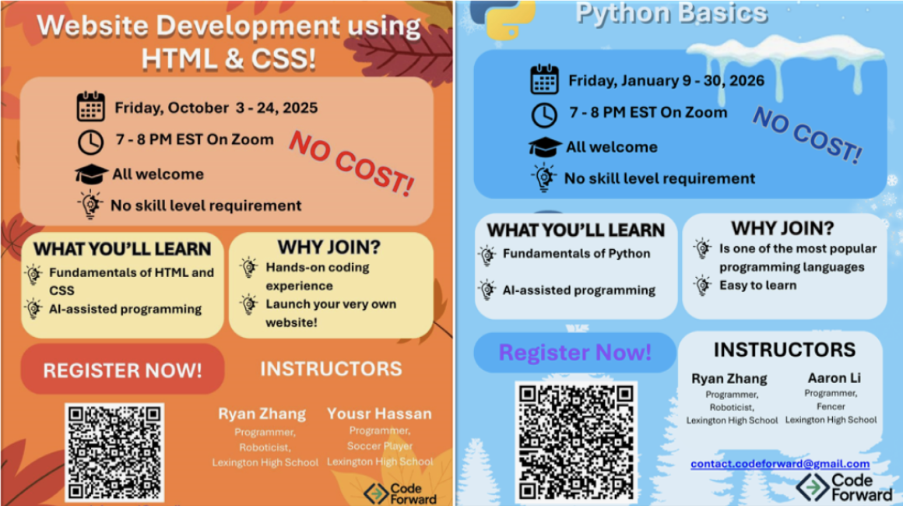

Highlights of Online Coding Workshops: From 1st Lines of Code to 1st Websites
March 19, 2026

This past year was an exciting one for CodeForward and our coding community! Through our Fall and Winter Coding Workshops, students from across the country took their first steps into the world of programming, and surprised everybody including themselves with just how much they could build in a short time.
Fall Coding Workshop (October 2025): Building the Web, One Line at a Time!
Our Fall Coding Workshop, held in October 2025, ran for four weeks and introduced students to the building blocks of the internet. Designed especially for beginners, the program guided students from learning what code is to create their very own fully functional webpages using HTML and CSS.
Participants ranged from 3rd to 8th grade, and 60% had never coded before, making it even more rewarding to watch their progress.
Each training session featured live demonstrations, hands-on practice, and plenty of opportunities to ask questions. As instructors, we focused on making coding feel approachable and fun, helping students build confidence as they learned.
“HTML and CSS are the building blocks of everything you see online. This workshop is all about making coding fun and approachable for beginners. We want to help kids feel confident building their first websites and exploring how the digital world comes together. We’re super excited to share what we’ve learned, and even more excited to have kids from outside Massachusetts joining in too!”
Winter Coding Workshop (January 2026): Why Python?
When we asked past participants what they wanted to learn next, Python came out on top—and for good reason. Python is one of the most popular and versatile programming languages today, and a great choice for beginners.
Our Winter Python Coding Workshop welcomed a new group of eager learners, with over 80% having little or no prior coding experience. The workshop focused on Python fundamentals like variables, loops, conditionals, and functions, all taught through hands-on activities and real examples.
To bring concepts to life, students worked on three mini-projects in class:
A simple math calculator
A student grade tracker
A creative flower-pattern drawing
Feedback from students and families was overwhelmingly positive, with many highlighting the interactive sessions, clear explanations, and supportive learning environment that made coding feel fun instead of intimidating.
Looking Ahead
Across both workshops, our goal stayed the same: to help students see themselves as creators of technology, not just users. The virtual Zoom format made both workshops accessible to all, removing barriers related to transportation and location.
Participants were recruited through social media and word of mouth, with attendees joining from Massachusetts, Pennsylvania, and California. Whether building their first website or writing their first Python program, participants left with new skills, confidence, and excitement for what they can build next.
We can’t wait to see where their coding journeys go from here!